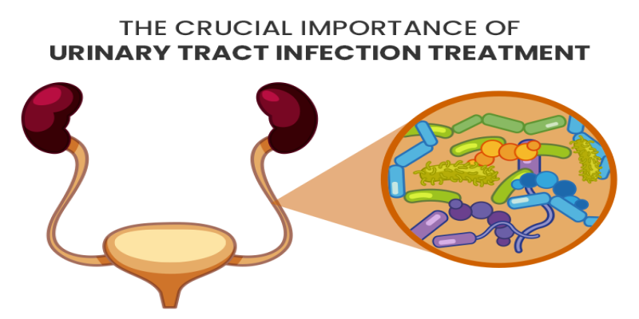

Driven by a passion for molecular biology, drug development, industrial biotechnology, biopharmaceutical quality, and healthcare innovation.
Get to know more about my academic journey and career aspirations.
I am an MSc Biotechnology student with a strong interest in molecular biology, genetics, and healthcare innovation. My fascination with biological sciences and a desire to understand how scientific discoveries can improve human health motivated me to pursue biotechnology.
I am particularly interested in understanding disease mechanisms, molecular biology techniques, drug development, and healthcare applications of biotechnology. These areas have inspired me to explore how biotechnology can contribute to solving real-world challenges.
My career goal is to build a professional career in the biopharmaceutical and biotechnology industry with interests in drug development, industrial biotechnology, and research-driven innovation.
Curious, adaptable, and eager to learn, I continuously strive to develop both technical and professional skills that will allow me to contribute meaningfully to the biotechnology sector.
Laboratory techniques, bioinformatics tools, computational knowledge, and professional skills.
Academic projects showcasing my research interests and practical experience.
Conducted a field-based study to document resident and migratory bird species, assess wetland biodiversity, and understand their ecological significance.

Preparing an academic review article focusing on recurrent UTIs, antimicrobial resistance, host–pathogen interactions, molecular mechanisms, and healthcare implications.
My current academic journey and career aspirations.
Currently pursuing MSc Biotechnology while developing laboratory techniques, bioinformatics knowledge, and research skills through coursework and projects.
Working on an academic review article focused on recurrent urinary tract infections and antimicrobial resistance, enhancing scientific writing and analytical skills.
Open to internships, industrial training, biotechnology research opportunities, and professional collaborations in biotechnology and biopharmaceutical industries.
Academic background and educational milestones.
Focused on biotechnology, molecular biology, microbiology, bioinformatics, genetics, and healthcare-related applications.
Studied animal biology, ecology, genetics, biodiversity, and environmental science.
Professional certifications and workshops that have strengthened my knowledge and skills.
Gained insights into industrial biotechnology processes, applications, and modern biotechnological innovations.
Trained in scientific literature management, citation handling, academic referencing, and research workflow optimization.
Participated in hands-on training covering genome sequencing technologies, sequence analysis, and bioinformatics applications.
Academic highlights and professional milestones.
Completed Industrial Biotechnology Certification from the University of Manchester.
Earned Mendeley Training Certification.
Participated in Genome Sequencing and Analysis Workshop.
Completed field-based biodiversity research on avian diversity.
Currently preparing a review article on recurrent urinary tract infections and antimicrobial resistance.
Continuously expanding expertise in biotechnology, molecular biology, and healthcare innovation.
Interested in my academic background, research experience, and technical skills?
Download ResumeI am always open to discussing biotechnology, healthcare innovation, research opportunities, internships, and professional collaborations.